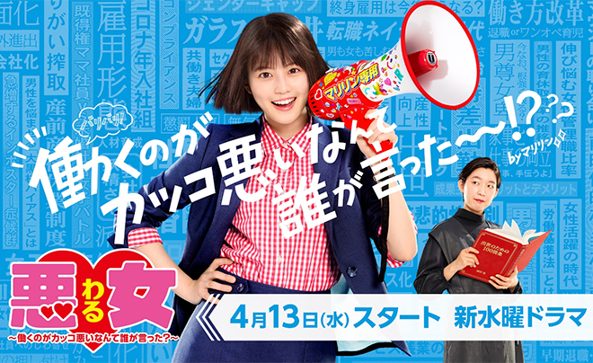
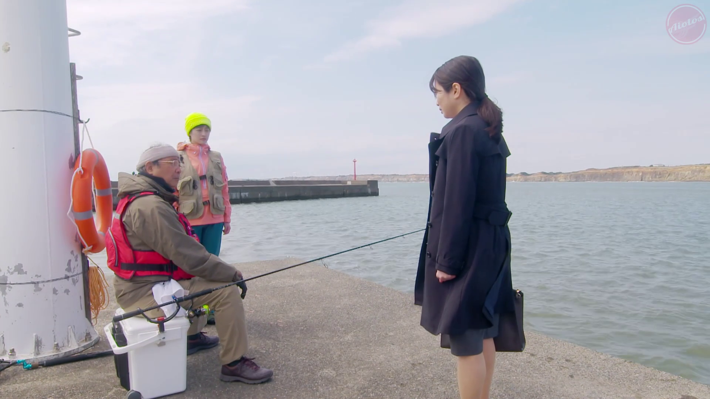
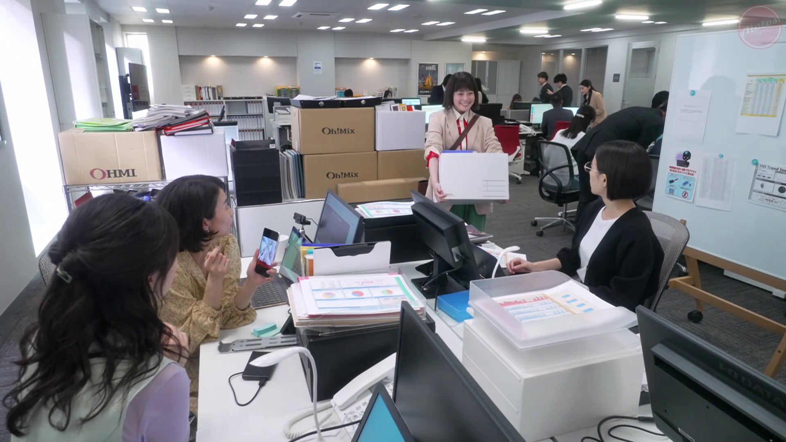
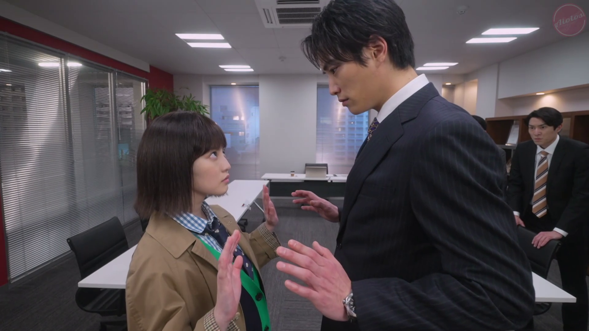
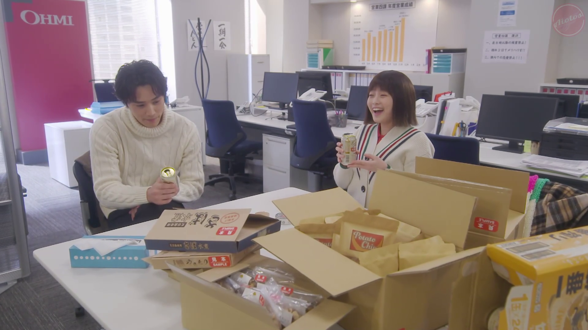
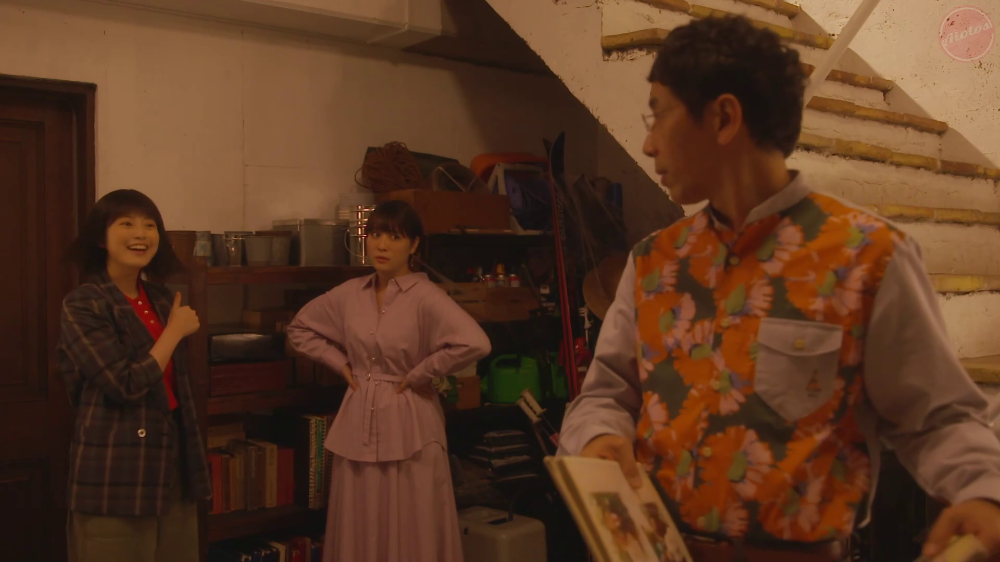
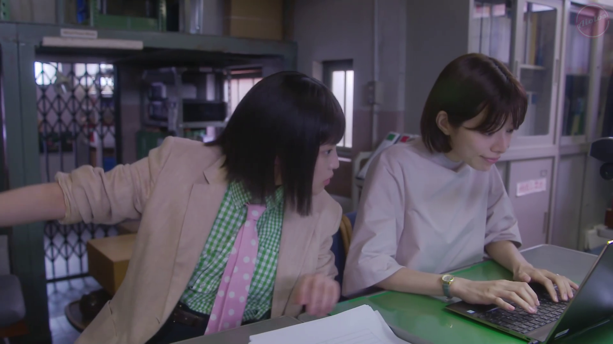
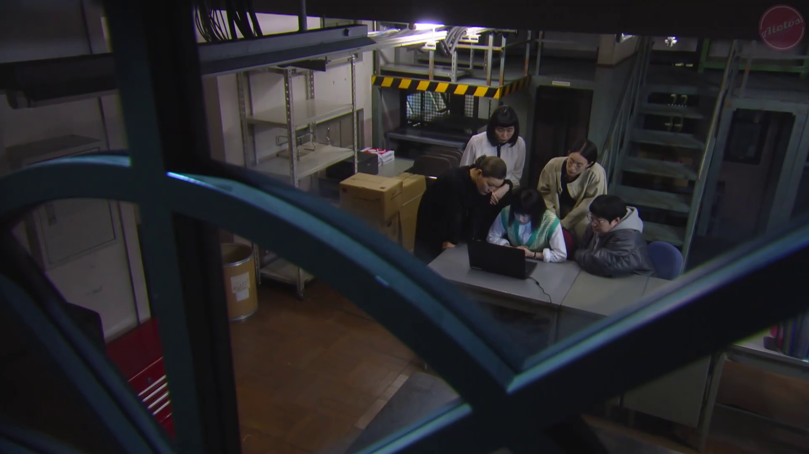
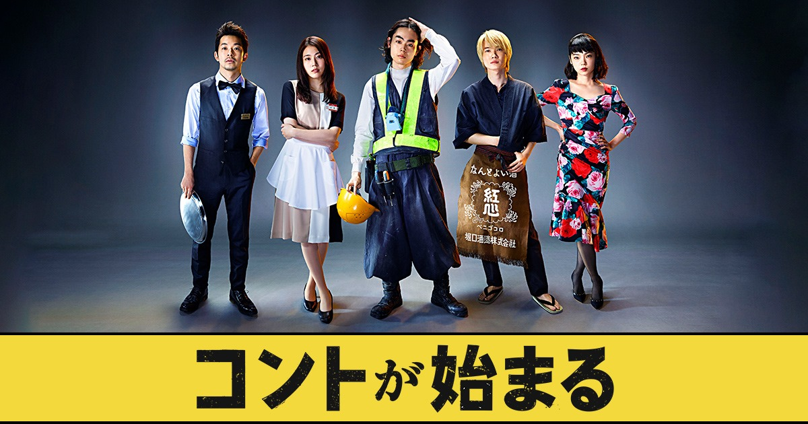

Waru: Hataraku no ga Kakko Warui Nante Dare ga Itta?
ทานากะ มาริริน สาวน้อยที่พึ่งเรียนจบมาหมาดๆ ถึงแม้จะทำงานวันแรกในแผนกเล็กๆ ชั้นล่าง เธอเองก็ยังไม่รู้สึกกังวลอะไร แถมยังมองโลกในแง่ดีแบบเอาจริงเอาจัง เธอพร้อมทำทุกอย่างทั้งวิ่งส่งของ เปลี่ยนหมึกเครื่องปริ้นเอกสาร เตรียมของห้องประชุมจนความมุ่งมั่นในการทำงานไปสะดุดตา รุ่นพี่มิเกนิชิในแผนกเดียวกันเข้า แต่ดูเหมือนว่าเธอจะไม่ได้อยู่แผนกเดียวกับมาริรินเพราะเพียงแค่เป็นพนักงานตัวเล็กๆ อย่างเดียวซะด้วยสิ
Waru: Hataraku no ga Kakko Warui Nante Dare ga Itta? (หรือในชื่อแฟนซับ - สาวออฟฟิศมือใหม่ หัวใจเกินร้อย) ละครสล็อตฤดูใบไม้พลิประจำวันพุธช่อง NTV ปีนี้ โดยเรื่องนี้เป็นทั้งรีบู๊ตและรีเมคมาจากละครในชื่อเดียวกันที่ออนในปี 1992 เนื้อเรื่องมีความอัปเดตตามยุคสมัย ในแต่ละตอนก็ยังเป็นเรื่องที่นำมาออกมาเล่าได้อย่างน่าสนใจ ทั้งประเด็นชายเป็นใหญ่ในสังคม การถูก gaslighting ในที่ทำงานหรือแม้กระทั่งการหยิบผลเอฟเฟคจากเรื่องของโควิดผ่าน "100 ยุทธวิธีการพาตัวเองก้าวหน้าในการทำงาน" ภายใต้พล็อตรอมคอมพนักงานออฟฟิศทั่วๆไปที่ถูกเปลี่ยนไปจากเดิมเยอะ หลังจากนี้จะเล่าแยกเป็นตอนๆ ไปเป็น Stage อย่างที่ตัวเรื่องเล่า

"เด็กรุ่นโควิด"
ทั้งรุ่นเรียนจบประถม มัธยม มหาวิทยาลัยต่างโดนเอฟเฟคกันทั้งแถบ เราเองก็ต่างรู้สึกเหมือนกันโดยเฉพาะเรื่องการเรียน เราเองถูกปรับโหมดการเรียนการสอนมา 2 ปี กว่าจะได้กลับมาออนไซต์ก็มีบางส่วนที่ดูเอ๋อไปเลย กับบางส่วนก็โน้น ไม่เอาอะไรแล้ว โดนกันไปค่อนข้างหนักพอสมควร โดยเฉพาะ "โออิ มิกะ" พนักงานขายที่เรียนจบเข้ามาทำงานยุคโควิดของ OHMI เองก็เช่นเดียวกัน ต้องมานั่ง WFH นั่งประชุมออนไลน์ ทำตามวีดิโอคู่มือฝึกงาน พอได้กลับมาที่ออฟฟิศ โออิเองก็ถูกลืม แถมโดนบอกอีกว่าเด็กยุคโควิดนี่มันทำอะไรไม่ค่อยได้เลย

"HR ที่ไม่แยแสอะไรทั้งนั้น"
ตอนนี้มีความพิเศษอย่างนึงตรง "ทานากะ มาริริน" จากฉบับปี 1992 ได้กลับมาในฉบับนี้ด้วย ทั้งเรื่องอาจจะโผล่มาเยอะเท่าไหร่นัก มาให้หายคิดถึงเป็น cameo กันเฉยๆ แต่ตลอดทั้งตอนก็ใช้การที่พาทานากะมาที่แผนกบุคคลเพื่อแซะวัฒนธรรมการกดดันภายในองค์กรแสบๆ ทั้งการประกาศรางวัลพนักงานดีเด่น การกดคนอื่นเพื่อให้ตัวเองสง่าเสมอ การนินทาเพื่อน/หัวหน้าที่ทำงานร่วมกันและชูประเด็นเรื่องความเท่าเทียมทางเพศ เสียดายที่ตอนนี้ถึงจะดูได้เพลินๆ แต่ก็แผ่วสุดในบรรดาหลายประเด็นที่ Waru เล่า

"ทีมส่วนเกิน"
การนำเสนอที่ดีมักจะมาจากทีมเวิร์คและแหล่งข้อมูลที่สำคัญ ในตอนนี้นอกจากทางฝั่งของมาริรินแล้ว ยังหันไปเล่า "โทโมโกะ นาชิดะ" สาวออฟฟิศแผนกรีเสิร์ช ทีม Extra ที่แยกออกมาจากทีมรีเสิร์ชอีกทีนึงที่ใช้ชีวิตสโลว์ไลฟ์ในที่ทำงาน เน้นทำงานไปเรื่อยๆ ไม่คิดถึงความก้าวหน้าอีกต่อไป ทั้งที่ก่อนหน้านี้สมัยเข้ามานั้น 'เข้ามาอย่างไฟแรง' แต่กลายเป็นว่า 'อยู่นานไปชักหมดไฟ' เป็นอีกตอนนึงที่เราดูแล้วรู้สึกเหมือนจึ้งเรามากๆ ค้นพบว่าที่เราอิน ไม่ใช่เพราะเราคาดหวังกับงานนั้น แต่เพราะว่าเขาไม่ซื้อและไม่อยากได้แบบนี้ชนิดไม่แยแสอะไรเลย สิ่งเดียวที่ทำได้คือ "ล้อมเขาให้ได้ซะ" ก็ดีกว่าไม่ทำอะไรซะเลย

"ชายเป็นใหญ่" / "เฟมินิสต์คือผู้ก่อการร้าย"
ประเทศญี่ปุ่นค่อนข้างจะวนเวียนอยู่กับปิตาธิปไตยอย่างโจ่งแจ้งชัดเจนมาแต่ไหนแต่ไร แต่ก็ปฎิเสธไม่ได้ว่าญี่ปุ่นเองก็เริ่มสร้างละครนำเป็นผู้หญิงก็ล่อไปปลายยุค 80s และมีมากขึ้นเรื่อยๆ แต่ในทางฐานะ หรือสังคมไม่ว่าจะครอบครัวหรือวัฒนธรรมองค์กรในประเทศที่มีความชัดเจนของตัวเองก็ยากที่จะปฎิเสธว่าก็ยังมี "ความมั่นใจสูง" จนไปกดขี่ดูถูกความคิดเห็นของคนอื่นและยอความเห็นของตัวเองซะยิ่งใหญ่อูฟู ทั้งที่มันก็ความเห็นเหมือนกัน

"บททดสอบสุดหินของมาริริน พิสูจน์ว่าเธอจะถูกกลืนกินในองค์กรมั้ยกับแผนกขายที่ขยันทำง๊านทำงานยันวันหยุด ดึกดื่นก็ยังทำ แถมยังมีกฎห้ามรักกันในที่ทำงานอีก" ดูเพลินๆ เนื้อเรื่องไม่ค่อยมีอะไรมาก ออกจากคลิเช่จากบรรดาหลายตอน อย่างที่ว่ามา ทานากะ ย้ายแผนกไปแผนกขายที่มีกฎเหล็กเอาไว้ว่าห้ามรักกันในที่ทำงาน แต่ตอนนี้ค่อนข้างเกลียดในระดับนึงที่บทในตอนนี้เซทไว้แบบนี้ ถึงแม้ massage ของมันจะดี แต่ก็ดูจบง่ายไปหน่อย และก็เนอะ character goal development ของทานากะ ช่วงต้นที่อยากเข้ามา OHMI มาจาก T.O. ซังอยู่แล้ว ไม่แปลกใจที่มาเวย์นี้เท่าไหร่
"รุ่นพี่รุ่นน้องก็แค่คนทำงานก่อน-หลัง แค่อยู่มาก่อน อย่ามาทำเป็นกร่าง"
"การเปลี่ยนไปของเจนเรเนชั่น ทำให้คนเขาไม่เข้าใจเรา และโมเดลการทำงานเปลี่ยนไป"
ถ้าตอนก่อนหน้าคือการส่งไม้ต่อระหว่างผู้สูงอายุที่เลิกทำงานไปสู่เด็กไฟแรงในยุคปัจจุบัน ตอนนี้ก็คงเป็นศึกระหว่างเจนเรเนชั่น ที่มองวัฒนธรรมการทำงานที่แตกต่างกัน ถูกถ่ายทอดตลอดทั้งเรื่องผ่านการเจอกับลูกค้าที่เป็นเจ้าของแบรนด์ที่ยากจะเปลี่ยนความคิดของเขา - น่าจะเป็นอีกตอนที่มีหลากหลายแง่คิดทั้งการทำงาน การใช้ชีวิต เป้าหมายในใจที่สามารถหยิบประยุกต์ใช้และถกเถียงอย่างเหลือเชื่อ

"การเมืองในออฟฟิศ" "หัดเป็นผู้ฟัง"
ชีวิตของเราล้วนมีการเมืองเป็นส่วนประกอบ ไม่ว่าจะระดับใหญ่ กลาง เล็ก องค์กรเองก็เช่นกัน พาร์ทนี้ยังคงชี้ให้เห็นถึงวัฒนธรรมองค์กรที่ล้าสมัย และแผนแยบยลของมิเนกิชิและ T.O. ในการเพิ่มสัดส่วนผู้หญิงภายในออฟฟิศ ทั้งๆที่โลกเปลี่ยนไปอย่างรวดเร็ว แต่ ผู้หญิงหลายคนก็ยังคงถูกคนภายในออฟฟิศมองว่าทำงานแปปเดียวก็ลาออกไปเป็นแม่บ้าน เป็นแม่เลี้ยงลูก หรือเพราะโครงสร้างองค์กรมันไม่เอื้อต่อคนทำงานแบบนั้นกันแน่ มันเป็นเพราะเราไม่ปรับตัวหรือเขาดื้อดึงที่จะยืนหยัดฝ่ากระแสนํ้าท่ามกลางโลกที่เปลี่ยนไปนี้กันแน่ แล้ว "ทำไมการปกป้องสิทธิของตัวเองถึงเป็นเรื่องที่เขินอายในสังคมทำงาน"

นำมาสู่การตบเรื่องทั้งหมดเข้าสู่องค์สุดท้าย "การให้ผู้หญิงเป็นเมเนเจอร์ในสัดส่วนที่มากขึ้นจะปรับเปลี่ยนองค์กรได้จริงรึเปล่า ในประเทศที่ปิตาธิปไตย วัฒนธรรมที่ทำงานกันเป็นบ้าเป็นหลัง" การไม่แยแสถึงคนทำงาน เห็นพนักงานเป็นแค่หุ่นยนต์เครื่องจักร ถ้าคนออกก็แค่หาใหม่ ย้อนไปสู่คำถามว่า ใครได้ประโยชน์ในเรื่องนี้ เพราะถึงแม้ JK5 จะเป็นแผนที่ถูกสร้างขึ้นมาเพื่อให้ผู้หญิงเข้ามาทำงานหน้าฉากแทนที่จะเป็นหลังฉาก ถึงแม้จะได้คนที่ซิลิคอนวัลเลย์ (ซาซานุมะซัง) มาเป็นเมเนเจอร์ แต่นับวันกลับแย่ลง หลายคนถึงกับ Routine พัง บางส่วนก็ต้องฝืนทนยอมรับสภาพ "การเป็นไม้ประดับ" ภาพฝันที่สวยหรูถูกพังทลายลงในพริบตา
เพื่อยืนยันว่าแผน JK5 ของมิเกนิชิและ T.O. ทำอยู่นั้นไม่เป็นผลดีต่อทั้งบุคลากรและทั้งองค์กร มาริรินจึง "ยืนยันความถูกต้องผ่านผลลัพธ์" เพื่อแสดงให้เห็นว่าที่ผ่านมา "การยกเพดานกระจก" ไม่ได้เวิร์คเลย หากคนในองค์กรกันเองยังมี bias ที่แบ่งแยกการทำงานระหว่างผู้ชายและผู้หญิง หากเรายกเพดานจนลืมมองคนที่ดันไปด้วยกัน สุดท้ายที่ดันเพดานมาก็คงไม่มีประโยชน์อะไรเลย

จากที่ว่ามา Waru: Hataraku no ga Kakko Warui Nante Dare ga Itta? อาจจะถูกมองว่าเป็นละครเฟมินิสต์จ๋า แต่หากมองตามเนื้อผ้าแล้ว มันก็ไม่ได้เป็นละครเฟมินิสต์จ๋ามากนัก เพราะเลือกที่จะเล่าปัญหาแทบจะทั้งหมดที่ต้องเจอเมื่อคุณทำงาน ไม่ว่าจะในองค์กรใด ก็มีโอกาสที่จะเกิดโอกาสความไม่เข้าใจหรือการ Power Harassment จากทั้งผู้หญิงและผู้ชาย ไม่ใช่ว่าจะเกิดแต่ผู้หญิงเพียงอย่างเดียว และถือว่าเป็นละครแนวรอมคอมที่เลือกยืนหยัดที่จะเล่าในประเด็นนี้โดยไม่เกี่ยวเพศ ถึงแม้ว่าการพัฒนาตัวละครยังขาดมิติ แบนราบอยู่บ้าง แต่เนื้อเรื่องมีความสนุก คลิเช่ไปบ้าง แต่ก็ยังดึงดูดและตระหนักถึงประเด็นความไม่เป็นธรรมภายในออฟฟิศได้บ้าง

น่าสนใจนิดนึงคือการปล่อย Waru มาในสล็อตชีชั่นไตรมาสที่ 2 ของปี ตรงกับช่วงที่ Konto ga Hajimaru หนึ่งในละครญี่ปุ่นช่องเดียวกันนี้ครบรอบปีนึงพอดี ว่าด้วยเรื่องราวคณะตลกของเหล่าเพื่อนสนิทที่กำลังจะแยกย้ายกลับไปยังทางเก่าของตัวเอง ทั้งสองเรื่องก็ทำหน้าที่เล่าและต่อยอดในประเด็นคนรุ่นใหม่ที่เลือกทำตามฝัน และการชวนเจนเรเนชั่นใหม่ใช้ชีวิตของตัวเองให้เต็มที่และฝ่าฟันมรสุมที่พัดโหมกระหนํ่าไปด้วยกันได้อย่างดี
มีให้ชมบน Netflix อยากให้ทุกคนได้ดูกัน